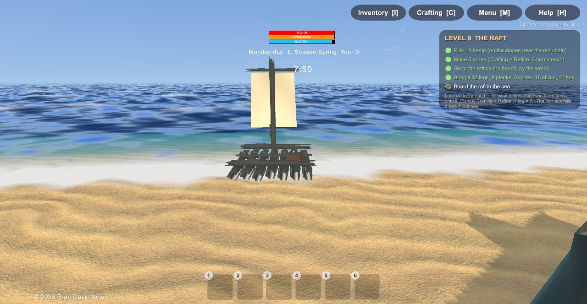
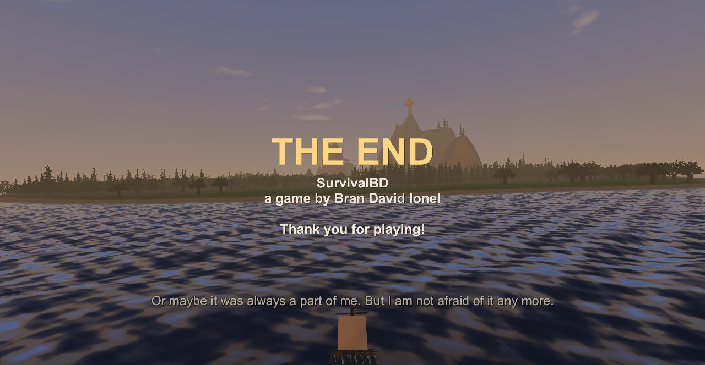
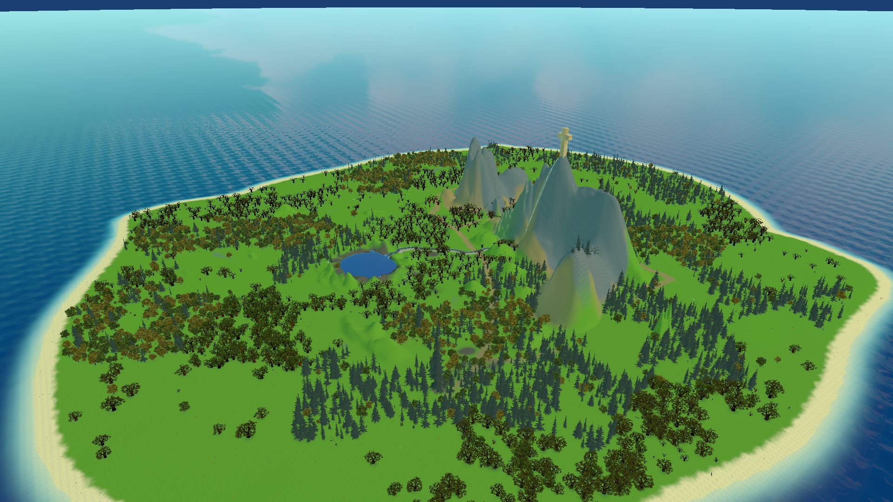
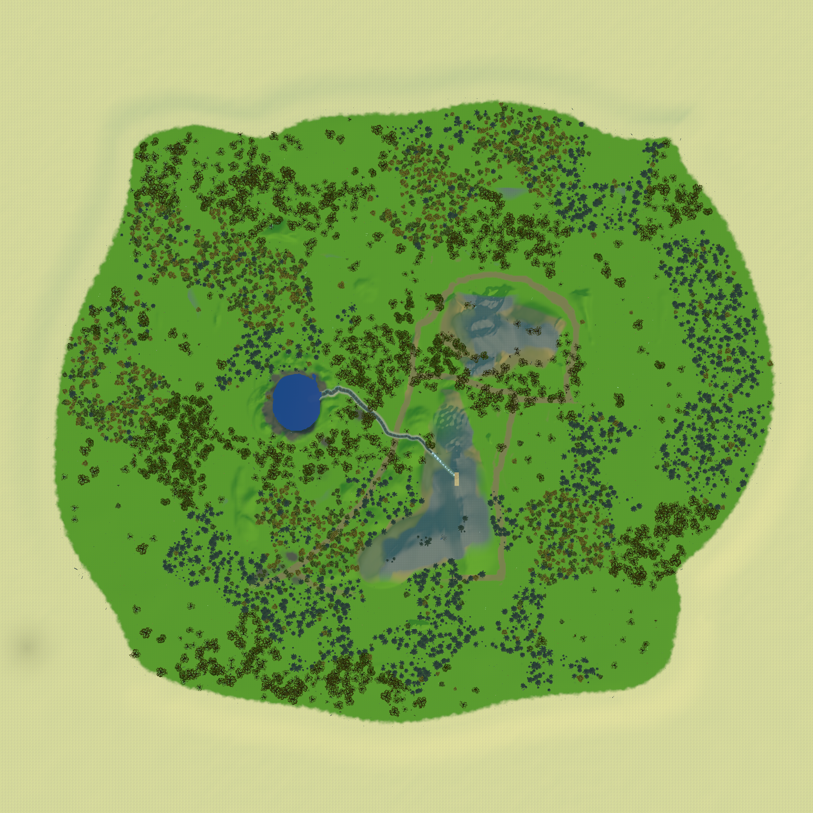
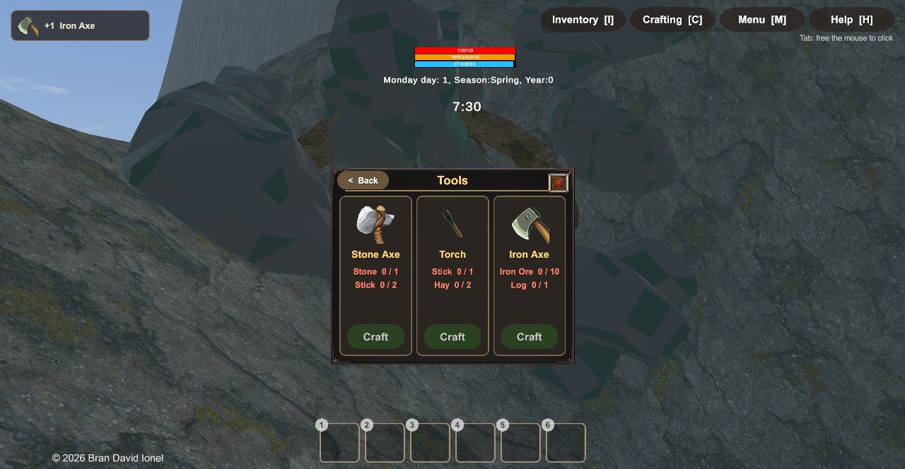
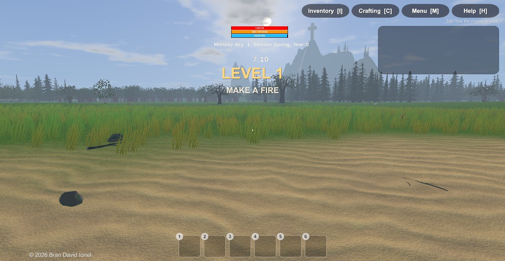
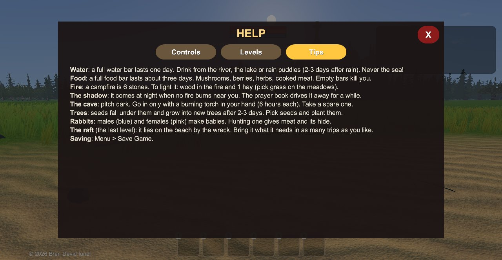

Povestea
Jocul începe pe plajă, lângă epava corabiei. Pe ecran negru, povestea apare rând cu rând (se poate sări cu Skip). Apare doar prima dată pe un dispozitiv: după aceea, sau dacă ai deja jocuri salvate, un joc nou începe direct cu nivelul 1.
The storm came out of nowhere.
For three nights the waves threw our ship around, until it broke apart on the rocks.
I remember the cold water... the screams... and then nothing.
When I opened my eyes, I was lying on the sand. Alone.
The ship is gone. The others are gone. I have nothing but my hands.
Night will come. First of all, I need a fire.
Jucătorul pornește cu mâinile goale, la ora 7 dimineața. Pe insulă trăiește o umbră: o siluetă înaltă, neagră, cu ochi albi, care vine noaptea când nu arde niciun foc aproape. În peștera din munte se află locul unde a murit Fratele Ioan, un călugăr care a trăit demult pe insulă și s-a luptat cu aceeași umbră. El a lăsat un jurnal și o carte de rugăciuni. Rugăciunea alungă umbra.
Tot textul din joc (poveste, obiective, mesaje) este în engleză; documentația aceasta este în română.
Nivelurile
Obiectivele nivelului curent apar în panoul din dreapta sus. Un pas bifat rămâne bifat. La finalul fiecărui nivel apare „LEVEL N COMPLETE” și povestea merge mai departe. Nivelul 9 (pluta) rămâne mereu ultimul: nivelurile noi se pun înaintea lui.
Fă un foc
- Strânge 6 pietre (pe plajă și prin iarbă).
- Fă un foc de tabără: Crafting › Survival › Campfire (6 pietre).
- Așază focul (din bara rapidă sau din inventar).
- Găsește lemne (crengi / bețe) și fân (smulgi iarbă uscată de pe pajiști).
- Aprinde focul: lemn în foc + 1 fân.
Apă dulce
- Găsește râul care coboară din munte sau lacul în care se varsă.
- Bea: te uiți în jos la apă și apare Drink water.
Ceva de mâncare
- Culege 2 ciuperci în pădure, la umbra copacilor.
- Mănâncă-le (în inventar: dublu tap pe telefon / clic dreapta pe PC).
Prima noapte
Povestea anunță că pe insulă e ceva ciudat: o formă întunecată privea dintre copaci și stătea departe de foc. Trebuie mult mai mult lemn.
- Strânge lemne de foc: 3 bușteni sau 8 bețe.
- Să ai focul aprins când se lasă noaptea.
- Rămâi lângă foc până dimineață.
Muntele
Noaptea pământul s-a cutremurat, iar în zori s-au auzit pietre căzând pe munte. Peștera, închisă până acum de pietre, se deschide.
- Explorează muntele.
- Găsește ce au deschis pietrele căzute (gura peșterii).
În întuneric
- Fă o torță: Crafting › Tools › Torch (1 băț + 2 fân).
- Ține torța în mână (se aprinde).
- Coboară până la capătul peșterii.
- Citește jurnalul vechi al Fratelui Ioan.
- Ia cartea de rugăciuni.
Rugăciunea
- Așteaptă noaptea.
- Când vine umbra, deschide cartea de rugăciuni.
Fierul
- Găsește 10 minereuri de fier în peșteră (cu torța!). În tunel sunt cam 50.
- Să ai un buștean.
- Fă toporul de fier: Crafting › Tools › Iron Axe (10 minereu + 1 buștean).
Pluta
Pe plajă, lângă epavă, apare pluta abia începută. Te uiți la ea și dai clic: tot ce are nevoie și cari la tine se pune pe ea. Poți face câte drumuri vrei; pluta crește pe măsură ce aduci materialele (bușteni, grinzi, frânghii, catarg, vela).
- Culege 18 cânepă (pe pantele de la poalele muntelui).
- Fă 6 frânghii: Crafting › Refine › Rope (3 cânepă fiecare).
- Mergi la plută, pe plajă, lângă epavă.
- Adu-i 12 bușteni, 8 scânduri, 6 frânghii, 16 bețe, 10 fân și 5 bucăți de carne gătită (provizii pentru drum: vânezi iepuri și frigi carnea la foc).
- Gata, pluta alunecă în mare. Urcă pe ea.


Supraviețuirea
Timpul
O zi de joc durează 6 minute reale (o oră de joc = 15 secunde). Sunt anotimpuri, ploaie, ceață și ninsoare; iarna zăpada acoperă pământul și unele plante.
Apa 1 zi
Bara de apă plină ține o zi de joc. Se bea din râu, din lac și din băltoacele de după ploaie (seacă după 2–3 zile). Din mare: Sea water (salty), nu se poate bea.
Hrana ~3 zile
Bara de hrană plină ține cam 3 zile de joc. Mersul și tăiatul lemnelor consumă mai repede. Ciupercile, fructele, ierburile și carnea o umplu.
Viața
Când apa sau hrana ajung la zero, viața scade până la moarte (apar avertismente înainte). Ciupercile și ierburile dau și viață.
Focul
Un foc de tabără = 6 pietre. Ca să-l aprinzi pui lemn (bețe, bușteni, scânduri) și folosești 1 fân. Lemnul se consumă; buștenii ard cel mai mult.
Setări
Limba: English sau Română, din meniul principal (butoanele din dreapta sus) sau din Menu › Settings. Schimbă toată povestea: intro-ul, nivelurile, jurnalul, rugăciunile, mesajele, ajutorul (H) și finalul. Numele obiectelor din inventar rămân în engleză.
Menu › Settings: volumul sunetelor din natură, al efectelor și volumul general, plus dificultatea: Easy (hrana și apa țin mai mult, torțele ard mai mult, umbra e mai lentă), Normal sau Hard (foamea și setea vin mai repede, torțele se sting mai devreme, umbra e rapidă).
Salvarea
Menu › Save Game: 10 locuri de salvare, fiecare cu o poză. Se salvează nivelul, copacii, plantele culese, iepurii, focurile, băltoacele, obiectele aruncate pe jos și progresul plutei.
La încărcare apare poza salvării pe fundal și o rugăciune ortodoxă aleasă la întâmplare, scrisă cu roșu (cel puțin 6 secunde, ca s-o poți citi).
Aruncarea obiectelor
Tragi un obiect din inventar afară din fereastră: jocul te întreabă dacă îl arunci pe jos. Dacă spui Da, obiectul cade în fața ta și îl poți lua din nou oricând. Pe coșul de gunoi obiectul dispare pentru totdeauna (te întreabă și aici).
Umbra
noaptea Când e întuneric și nu arde niciun foc la mai puțin de 20 m, după câteva secunde umbra apare la vreo 40 m și vine spre tine. Ai cam 20 de secunde: aprinde un foc sau deschide cartea de rugăciuni. Dacă te prinde, mori și jocul revine la meniul principal.
peștera În peșteră e beznă și umbra trăiește acolo. Fără torță aprinsă în mână, la mai mult de câțiva metri de intrare: avertisment, bătăi de inimă, apoi „The shadow took you in the dark...”.
apărare Focul (cât arde), torța aprinsă în mână (oriunde, nu doar în peșteră) și cartea de rugăciuni (o alungă câteva ore, de câte ori o deschizi noaptea).
Insula
O insulă ovală de aproximativ 2 km, cu un munte în mijloc și un lac în craterul lui.

Plaja și epava
Locul de start. Bucăți din corabie, scânduri și lemn adus de valuri, pietre. Aici se construiește pluta la final.
Pădurile
Patru feluri de copaci: molid/brad, mesteacăn, stejar și fag. Sub copaci pământul e întunecat, fără iarbă, cu ferigi și tufe, ciuperci, crengi căzute, trunchiuri și buturugi vechi.
Copacii cresc singuri
Copacii își scutură semințele (conuri, ghinde, jir, mâțișori). Semințele căzute încolțesc după 2–3 zile de joc și devin copaci noi. Le poți culege și planta tu. Un copac tăiat lasă bușteni, crengi (puține la brazi, mai multe la ceilalți) și o buturugă.
Pajiștile
Iarbă multă: Pick grass (hay) dă fân (același loc se poate culege din nou după o zi). Flori, cicoare, iarbă neagră (heather), tufe cu fructe.
Râul și lacul
Râul pornește de sus de pe munte și se varsă în lacul din crater. Lângă râu se aude apa curgând. Din amândouă se poate bea.
Muntele și peștera
Peștera coboară lung în munte: stalactite, stalagmite, ciuperci (și unele care strălucesc), minereu de fier. La capăt: o cruce ortodoxă, oasele călugărului, lumânări, jurnalul și cartea de rugăciuni. Cânepa crește pe pantele de la poalele muntelui.
Iepurii
Peste 100 de iepuri pe toată insula. Deasupra fiecăruia scrie Male (albastru) sau Female (roz); puii cresc în o zi și jumătate. Un mascul și o femelă apropiați fac pui. Vânați cu toporul, lasă carne și blană.

Rețete (Crafting)
| Ce faci | Din ce | Unde | La ce folosește |
|---|---|---|---|
| Topor de piatră (Axe) | 1 piatră + 2 bețe | Tools | Tai copaci, vânezi iepuri |
| Torță (Torch) | 1 băț + 2 fân | Tools | Lumină în peșteră, ~6 ore de joc în mână |
| Topor de fier (Iron Axe) | 10 minereu de fier + 1 buștean | Tools | Orice copac din 3 lovituri |
| Foc de tabără (Campfire) | 6 pietre | Survival | Căldură, gătit, apărare de umbră |
| Ladă (Storage Box) | 2 scânduri | Survival | Păstrezi lucruri |
| Scânduri (Plank) | 1 buștean → 2 scânduri | Refine | Construcții, plută |
| Frânghie (Rope) | 3 cânepă | Refine | Pluta |
| Fundație / Perete | 4 / 2 scânduri | Construction | Adăpost |
| Pluta (pe plajă, nu în meniu) | 12 bușteni, 8 scânduri, 6 frânghii, 16 bețe, 10 fân, 5 carne gătită | lângă epavă | Plecarea de pe insulă (finalul) |
Pe fiecare card din Crafting cerințele apar cu roșu până ai destul, apoi cu verde.

Hrană și plante
| Obiect | Unde se găsește | Efect |
|---|---|---|
| Hribi (Porcini) | în păduri | +15 viață, +250 hrană |
| Ciupercă de câmp (Field Mushroom) | în păduri | +10 viață, +150 hrană |
| Ciupercă roșie (Red Mushroom) | în păduri | +8 viață, +120 hrană |
| Fructe de pădure (Berries) | tufe la marginea pădurilor | +3 viață, +120 hrană, +6 apă |
| Cicoare (Chicory) | pajiști | +8 viață, +4 apă |
| Iarbă neagră (Heather) | pajiști, pante | +6 viață, +20 hrană |
| Carne de iepure | iepuri vânați | hrană |
| Fân (Hay) | iarba de pe pajiști | aprinzi focul, torțe, plută |
| Cânepă (Hemp) | pantele muntelui | frânghii |
| Con de brad, mâțișor de mesteacăn, ghindă, jir | sub copaci | le plantezi: devin copaci noi |
| Minereu de fier (Iron Ore) | în tunelul peșterii | toporul de fier |
Plantele culese cresc la loc după un timp (minereul și cărțile nu).
Controale
PC (Windows)
| W A S D | mers |
| mouse | privit |
| Space / Left Ctrl | sărit (în apă: sus / jos) |
| clic stânga | lovești, iei, deschizi, bei, așezi |
| clic dreapta pe obiect | folosești / mănânci |
| 1–6 | bara rapidă |
| I C M H | inventar, crafting, meniu, ajutor |
| Tab | eliberezi mouse-ul pentru butoane |
| X | anulezi așezarea |
Pe PC, în dreapta sus sunt și butoane: Inventory [I], Crafting [C], Menu [M], Help [H], ca să nu trebuiască ținute minte tastele.
Telefon
| joystick stânga | mers |
| joystick dreapta / glisare | privit |
| butonul mare | Attack / Take / Open / Place (se schimbă după ce privești) |
| Jump / Down | sărit, în apă sus/jos |
| dublu tap pe obiect | folosești / mănânci |
| tap pe slotul rapid | iei în mână |
| dreapta sus | Inventory, Crafting, Menu |
În meniul jocului există butonul Help, cu trei pagini: Controls, Levels (unde ești acum) și Tips.

